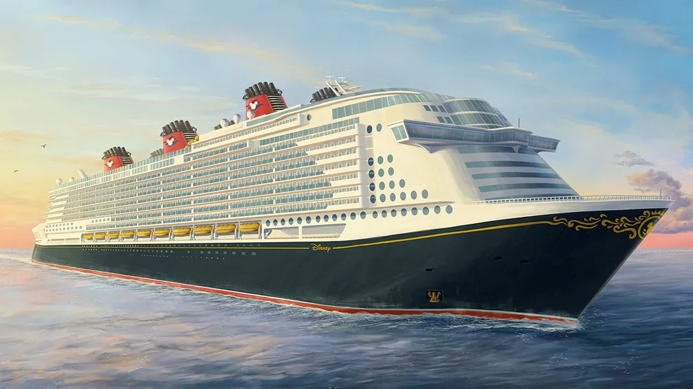

Next Steps & Expected Outcomes
Immediate Actions
Form cross-functional implementation team. Begin TikTok partnerships and park AR integration within 30 days.
Expected Outcomes
27% increase in teen-driven bookings within 6 months. $380M incremental revenue in first year, scaling to $1.46B by year three.
Experience Enhancement Examples
Disney Cruise Line
Enhanced "Vibe" teen lounge with content creation studio
Theme Parks
Teen Night events with exclusive ride experiences

Gaming Integration
Interactive experiences that unlock physical rewards

Converting digital engagement to real-world experiences creates lifetime Disney fans
By meeting teens where they are online and providing compelling pathways to physical experiences, Disney can build long-term brand loyalty.